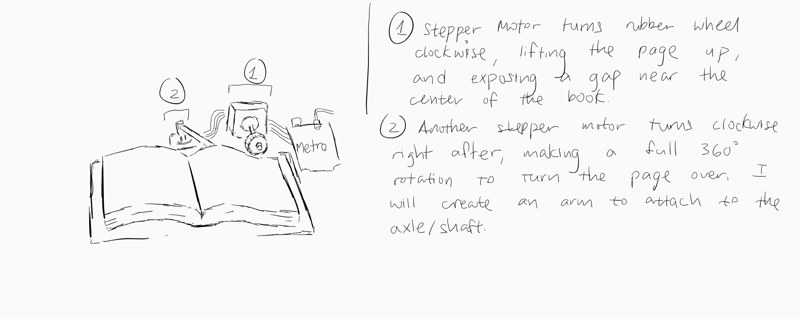

After making numerous changes to my final project idea, I finally settled on an idea I had in the back of my head for a while now. It's a page turning machine which consists of stepper motors, servomotors, and the use of Firebase. I really like this idea of a final project because I get to utilize output devices such as motors. Plus, this really sounds cool to me.
To summarize the bad handwriting in the picture, I would probably use one servomotor to turn a wheel, which would turn the page inwards, revealing a gap near the center of the book. A stepper motor would then turn clockwise to push that page over to the left side. Then, the whole process repeats.